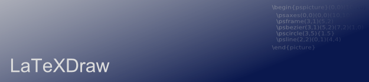
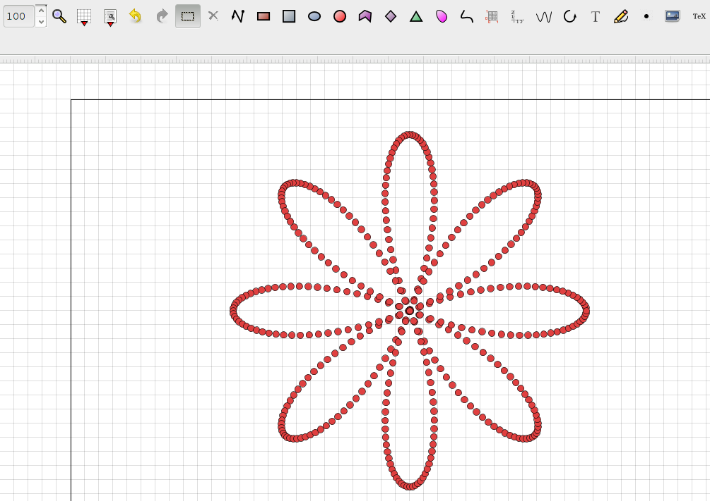
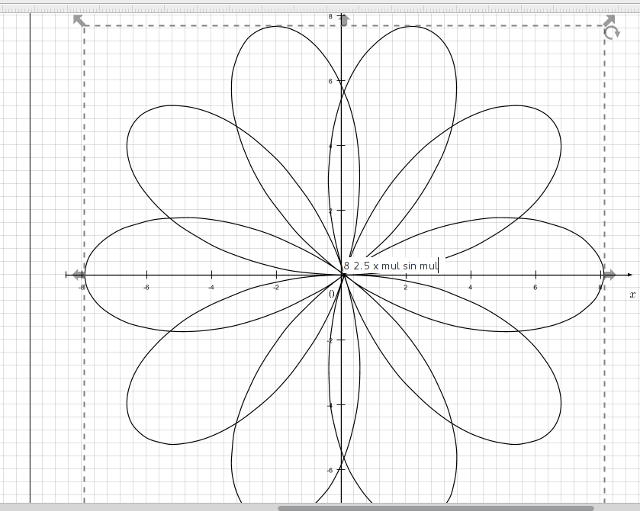
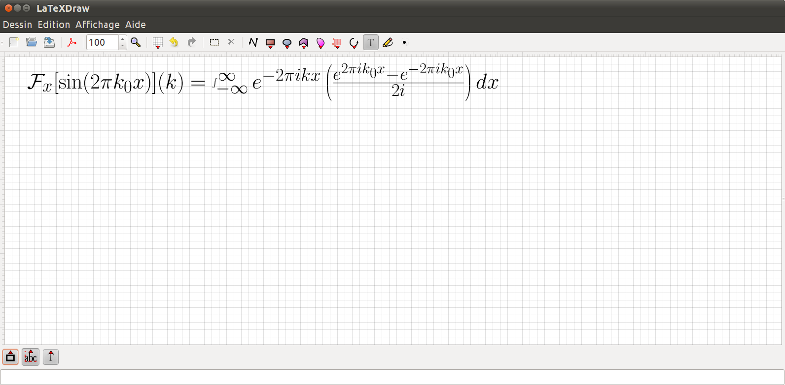
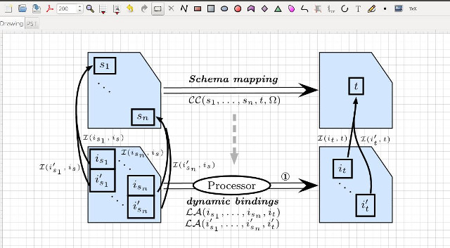
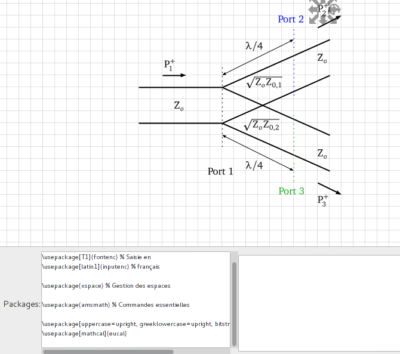
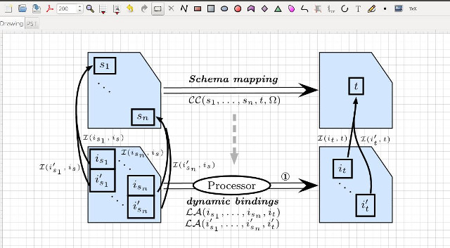
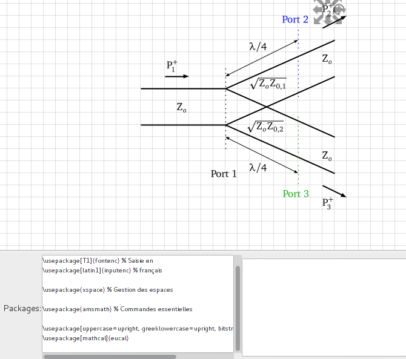

This bugfix release fixes an annoying crash while running the application using Java 9.

LaTeXDraw
LaTeXDraw is a graphical drawing editor for LaTeX. LaTeXDraw can be used to 1) generate PSTricks code; 2) directly create PDF or PS pictures. LaTeXDraw is developed in Java and thus runs on top of Linux, Windows, and Mac OS X. You need Java 8 to launch LaTeXDraw.
Latest version: 3.3.8
Nightly builds (may be unstable), for Linux and Windows, for Mac OS X
You can support this software by making a donation, reporting bugs, or translating it.
LaTeXDraw is developed using IntelliJ Idea
News
-
2017-12-03LaTeXDraw 3.3.8 -- Bugs fixed
-
2017-11-19LaTeXDraw 3.3.7 -- Bugs fixed
Another bugfix release. The last release, I hope, before a first public release of the 4.0 version. This release fixes a crash while running the application using Java 9. Give an eye to the release note for more details regarding the bugs fixed.
-
2017-07-12LaTeXDraw 3.3.6 -- Bugs fixed
Another bugfix release. This may be the last release before a first public beta release of the 4.0 version. This 4.0 version will be a huge release (new design, new user interfaces, better performance) and will allow the support of new major LaTeX features in a near future. Give an eye to the release note for more details regarding the bugs fixed.
-
2016-12-30LaTeXDraw 3.3.5 -- Bugs fixed
This new version fixes serious issues, in particular for the latest version of MikTeX. Give an eye to the release note for more details regarding the bug-fixes.
-
2016-09-17LaTeXDraw 3.3.4 -- Bugs fixed
This new version fixes many bugs, in particular for MacOSX. One new feature is that an 'app' package is now provided for MacOSX users. They just have to put it in the "Applications" folder and it should be smoothly integrated in the system. Java 8 is also required (instead of the old Java 7) to run the application. Give an eye to the release note for more details regarding the bug-fixes.
-
2016-05-01LaTeXDraw 3.3.3 -- Bugs fixed
This new version fixes major bugs. Since the 3.3 version, you may have noticed performance issues (lags) while editing, moving. I just found a fix -- using openGL to render the graphics -- but it may rise glitches or other graphical issues depending on you system and on your graphical card. For instance the mini-toolbars are not painted correctly with my Intel graphical chipset on Linux. Nevermind, the graphical performances are great now. You can still de-activate the use of openGL in the preferences. Give an eye to the release note for more details regarding the other bug-fixes.
-
2015-11-03LaTeXDraw 3.3.2 -- Bugs fixed
This new version fixes major bugs. In particular the problem related to the new MacOS version "El captain" seems to be fixed. Give an eye to the release note for more details.
As a reminder, you can support this software by making a donation.
-
2014-11-23LaTeXDraw 3.3.1 -- Bugs fixed
This new version fixes major bugs introduced in the previous release. Give an eye to the release note for more details.
-
2014-11-03LaTeXDraw 3.3 -- PSPlot
This new version brings an exciting new feature: the support of psplot!  As explained in my previous post, psplot permits to plot functions following the postscript formalism (e.g. 2 x mul cos). Polar coordinates can be used and various parameters are available. Besides, many bugs have been fixed. Give an eye to the release note for more details.
-
2014-11-01PSPlot -- Plotting functions with LaTeXDraw
The no-more-far 3.3 release will bring an exciting new feature: the support of psplot! The command psplot permits to plot functions as depicted in the following figure.  As you can see, you can type your function following the postscript formalism. You can also customise some parameters such as the number of plotted points, whether the function has to be plotted following polar coordinates, etc. I know there is a feature to type functions in a more natural way (e.g. sin(x) instead of x sin) but this is not supported yet. You can also import PSPlot code into LaTeXDraw. You can try that by using the latest development version.
-
2014-09-16Exporting as EPS on Windows (precisions)
I said in my previous post that ps2eps requires Perl. In fact, the real problem on Windows is that ps2eps does not exist anymore!? I just replaced the use of ps2eps by ps2epsi. It should normally fix the problem of exporting EPS picture. You can try that by using the latest development version. Tell me whether this issue is now fixed.
-
2014-09-14Exporting as PS/PDF on Windows
Miktex is certainly the widely-used LaTeX distribution on Windows. Some LaTeX binaries (pdfcrop and ps2eps notably) have a dependency to an application not installed by default by Miktex: perl. So, Windows users that do not have perl installed cannot use pdfcrop and ps2eps. They, therefore, may not be able to export as PDF/PS using LaTeXDraw. It seems that the only solution is to install perl: http://strawberryperl.com/. To known whether pdfcrop and ps2eps work, you can check them by looking at the text in the tab "System" (menu "Help" -> "About LaTeXDraw"). I will look at avoiding such a new installation for the next release.
-
2014-09-14LaTeXDraw 3.2 released
This new version fixes major bugs. I did not have the time to finish the support of PSPlot functions. It will be part of the next release for sure. Amongst the fixed bugs, the biggest one is certainly a bug related to the PDF/PS export on Windows 8.1. Give an eye to the release note for more details.
-
2014-01-27LaTeXDraw 3.1 released
This new version brings important changes and fixes major bugs. The new features are:
- Opacity and strokeopacity attributes are now supported. That permits to set the opacity of colours for the line border and the filling.
- The size of drawing area is no more limited to the size of the drawing. Additional boundaries are now provided around the drawing area to ease the editing.
- In complement to the previous change, a page (US letter only for the moment) is painted.
- When zooming using the mouse, the zoom process follows the pointer. The zoom increment, min, and max values have been changed to fit this new feature.
- Like many drawing applications, the view point of the drawing area can be move using the middle button of the mouse (or both the right and left buttons in some cases). It is more convenient than using the scroll bars.
- Better rendering performance.
- Ukrainian translation added.
- A menu item has been added to go to the latexdraw manual
- A text field that contains the LaTeX compilation error log has been added to the text toolbar.
Give an eye to the release note for more details. -
2014-01-18Problem with LaTeX text rendering on Windows
If the native LaTeX rendering works like a charm on Linux, it seems that it does not work correctly on Windows. I just fixed an issue that blocked that feature on Windows Seven but I do not have a Windows 8 to test that. So, do not hesitate to download the latest development version to test the LaTeX rendering on Windows (Seven, 8) and MacOSX, and send me an email or use the forum to give me feedback!
-
2013-12-23LaTeXDraw 3.0.0 released
It is about time. Latexdraw 3.0 has been released today. More than 3 years without any stable release. As I said previously Latexdraw has been totally rewritten to be more usable and easy to maintain in the future. See below for the new features and give an eye to the release note.
So use it! -
2013-04-01 For testing purposes only: LaTeXDraw 3.0.0 beta 1 released
The first beta release is out. Many bugs have been fixed, many others remain. So, let's test it and hope it would be the last beta before the final release.
So test it! -
2013-02-24 For testing purposes only: LaTeXDraw 3.0.0 alpha 5 released
Ok ok folks. Almost one year without any release... If you want to blame someone, blame Blizzard to have released Diablo III in April 2012 and my job ^^. More seriously this release re-introduces the conversion of pstricks code into shapes, and fixes several and annoying bugs such as the pdf-blank-page bug. Just as a reminder, this branch 3.0 is almost a complete rewriting of the application to ease the future developments. That's why it takes so long. The version 3.0 is almost feature complete. So the next release will be a beta one and will bring bug fixes, performance and usability improvements.
So test it! -
2012-04-23 For testing purposes only: LaTeXDraw 3.0.0 alpha 4 released
Fourth alpha just released. Still for testing purposes only. This version: several Windows Seven bugs fixed; can customise grids and free hand shapes using widgets; can change the angles of arcs using their handlers; can reuse and create templates; the PSTricks parameter 'showpoints' supported for Bézier curves. Test it!
One more alpha version is expected to (re-)support PSTricks import. Then, beta versions will be prepared to fix issues. -
2012-04-10 For testing purposes only: LaTeXDraw 3.0.0 alpha 3 released
Third alpha just released. Still for testing purposes only. I was pretty busy these last weeks so that this release does not contain a lot of improvements: can rotate shapes; can customise axes; can customise the drawings' properties. Another alpha is expected in a couple of weeks.
-
2012-02-26 For testing purposes only: LaTeXDraw 3.0.0 alpha 2 released
Second alpha just released. Still for testing purposes only (piece of advice ;)). A lot of bugs were fixed, can join/separate shapes, can customise arrows, better text thumbnail resolution, progress bars,...
A third alpha is expected in 4 weeks. -
2012-01-29 For testing purposes only: LaTeXDraw 3.0.0 alpha 1 released
Whooooooooooo! Finally a release. It's about time. Ok ok, this is not a stable release but a preview for testing purposes only. LaTeXDraw 3.0.0 alpha 1 has been released with a lot of improvements such a native support of LaTeX text, pdf export on Macos has been fixed, etc.
You can get the files and the release note there: Download alpha 1.
There is still a lot of features not yet re-introduced in 3.0.0 (for your memory: LaTeXDraw has been completely rewritten for the 3.0.0 version), such as: it is not possible to rotate shapes yet; no PSTricks import; no recent files; some widgets are still missing for modifying some shapes' attributes; etc.
You can report any problem there or there.
I will release a new alpha version at the end of February.
-
2011-08-12 Native support of LaTeX text
More than one year without any release and post... Shame on me. LaTeXDraw 3.0 in on the road and a first beta should be released before the end of this year. This release takes a lot of time because I am completely rewritting LaTeXDraw: the code of 2.0 is really awful and I wanted to integrate the results of my PhD into LaTeXDraw in order to improve this last.
The most important feature of LaTeXDraw 3.0 will be the native support of LaTeX text. It means that you will be able to write LaTeX text as in your favourite LaTeX editor. The text will be rendered in LaTeXDraw as in your final pdf or ps document. For example, in the following screen-shot I added a text in the drawing and typed a formula.

 This idea is strongly inspired by Lyx ;). Of course, if you want to use LaTeX commands coming from various packages, you can add \usepackage{} commands as it is already possible in LaTeXDraw 2.0.
You can also discover in the screen-shots others new features; but I will speak about them in next posts soon.
 



{kind=link}
{kind=link}